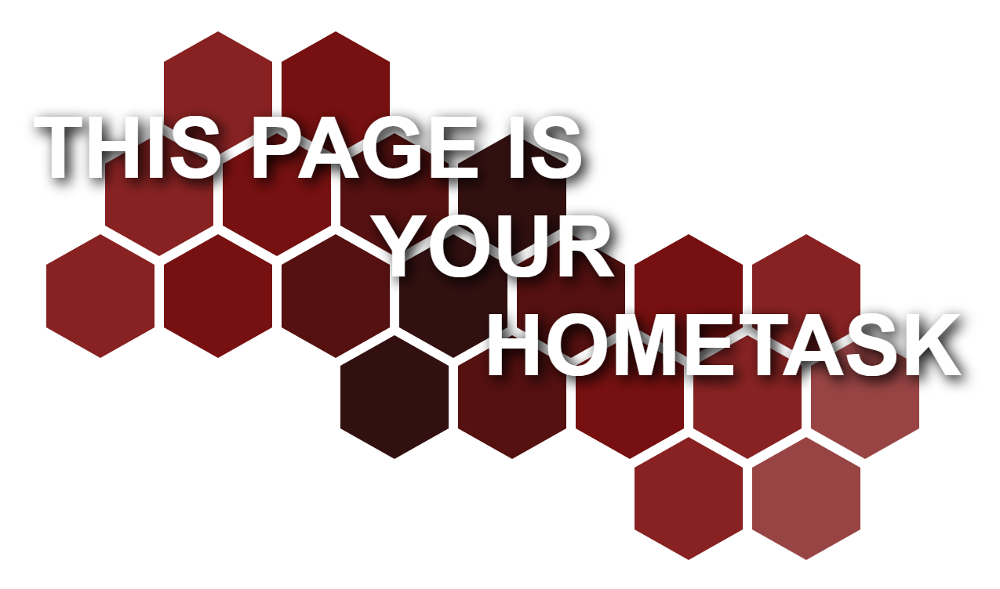

|
Материал
|
Описание
|
Примеры значений
|
Псевдоклассы
|
Псевдоклассы
определяют динамическое состояние элементов, которое изменяется с помощью действий пользователя, а
также положение в дереве документа. Примером такого состояния служит текстовая ссылка, которая меняет
свой цвет при наведении на неё курсора мыши. При использовании псевдоклассов браузер не перегружает
текущий документ, поэтому с помощью псевдоклассов можно получить разные динамические эффекты на
странице.
Псевдокласс :invalid
Применяется к полям формы, содержимое которых не соответствует указанному типу.
Псевдокласс :read-only
Применяется к полям формы, у которых задан атрибут readonly.
Псевдокласс ::-moz-placeholder
Псевдокласс, с помощью которого задаётся стилевое оформление подсказывающего текста в
Firefox.
Псевдокласс ::-webkit-input-placeholder
Псевдокласс, с помощью которого задаётся стилевое оформление подсказывающего текста в
Chrome.
Псевдокласс :active
Определяет стиль активной ссылки.
Псевдокласс :checked
Применяется к элементам интерфейса, таким как переключатели (checkbox) и флажки (radio), когда они
находятся в положение «включено»
Псевдокласс :default
Применяет стиль к элементам форм, которые установлены по умолчанию в группе похожих
элементов.
Псевдокласс :disabled
Применяет стиль к заблокированным элементам форм.
Псевдокласс :empty
Представляет пустые элементы, т.е. те, которые не содержат дочерних элементов, текста или
пробелов.
Псевдокласс :enabled
Используется для применения стиля к доступным (не заблокированным) элементам форм.
Псевдокласс :first-child
Применяет стилевое оформление к первому дочернему элементу своего родителя.
Псевдокласс :first-of-type
Задает правила стилей для первого элемента в списке дочерних элементов своего родителя.
Псевдокласс :focus
Определяет стиль для элемента получающего фокус.
Псевдокласс :hover
Определяет стиль элемента при наведении на него курсора мыши, но при этом элемент еще не
активирован.
Псевдокласс :indeterminate
Задает стиль для элементов форм, таким как флажки и переключатели, когда они находятся в
неопределенном состоянии.
Псевдокласс :lang
Определяет язык, который используется в документе или его фрагменте.
Псевдокласс :last-child
Задает стилевое оформление последнего элемента своего родителя.
Псевдокласс :last-of-type
Задает правила стилей для последнего элемента в списке дочерних элементов своего родителя.
Псевдокласс :link
Применяется к ссылкам, которые еще не посещались пользователем.
Псевдокласс :not
Задает правила стилей для элементов, которые не содержат указанный селектор.
Псевдокласс :nth-child
Используется для добавления стиля к элементам на основе нумерации в дереве элементов.
Псевдокласс :nth-last-child
Используется для добавления стиля к элементам на основе нумерации в дереве элементов.
Псевдокласс :nth-last-of-type
Используется для добавления стиля к элементам указанного типа на основе нумерации в дереве
элементов.
Псевдокласс :nth-of-type
Используется для добавления стиля к элементам указанного типа на основе нумерации в дереве
элементов.
Псевдокласс :only-child
Применяется к дочерним элементам, только если он единственный у родителя.
Псевдокласс :only-of-type
Применяется к дочерним элементам указанного типа, только если он единственный у родителя.
Псевдокласс :optional
Применяет стилевые правила к полю формы, у которого не задан атрибут required.
Псевдокласс :read-write
Применяется к полям формы, доступных для изменения.
Псевдокласс :required
Применяет стилевые правила к тегу input, у которого установлен атрибут required.
Псевдокласс :root
Определяет корневой элемент документа. В HTML этот селектор всегда соответствует элементу
html.
Псевдокласс :target
Применяется к целевому элементу, иными словами, к идентификатору, который указан в адресной строке
браузера.
Псевдокласс :valid
Применяется к полям формы, содержимое которых проходит проверку в браузере на соответствие указанному
типу.
Псевдокласс :visited
Применяется к ссылкам, уже посещённым пользователем, и задает для них стилевое оформление.
|

|
Псевдоклассы
|
Псевдоэлементы
Псевдоэлементы позволяют задать стиль элементов не определённых в дереве элементов документа, а также
генерировать содержимое, которого нет в исходном коде текста.
Синтаксис использования псевдоэлементов следующий.
Селектор::Псевдоэлемент { Описание правил стиля }
Вначале следует имя селектора, затем пишется двоеточие, после которого идёт имя псевдоэлемента. Каждый
псевдоэлемент может применяться только к одному селектору, если требуется установить сразу несколько
псевдоэлементов для одного селектора, правила стиля должны добавляться к ним по отдельности, как
показано ниже.
Псевдоэлемент ::-moz-selection
Применяется к выделенному пользователем фрагменту документа. Поддерживается только браузером
Firefox.
Псевдоэлемент ::-ms-browse
Позволяет задать стиль кнопки «Обзор» при загрузке файлов через input type="file" в Internet
Explorer.
Псевдоэлемент ::-ms-check
Задаёт стиль переключателей (input type="radio") и флажков (input type="checkbox").
Псевдоэлемент ::-ms-clear
Задаёт стиль кнопки для очистки текстового поля. Исходно эта кнопка не видна, она появляется в правой
части поля только при вводе текста.
Псевдоэлемент ::-ms-expand
Задаёт стиль кнопки раскрытия списка, созданного с помощью тега select в браузере Internet
Explorer.
Псевдоэлемент ::-ms-fill
Задаёт стиль индикатора элемента progress в браузере Internet Explorer. Само значение индикатора и
его положение меняется динамически посредством скриптов.
Псевдоэлемент ::-ms-reveal
Задаёт стиль кнопки для просмотра пароля в поле input type="password". Кнопка исходно не видна и
появляется при вводе пароля в правой части поля.
Псевдоэлемент ::-ms-value
Позволяет изменять стиль элементов формы, сделанных с помощью тега input или select, в
браузере Internet Explorer.
Псевдоэлемент ::after
Псевдоэлемент CSS3, который используется для вывода желаемого контента после элемента, к
которому он добавляется.
Псевдоэлемент ::before
Псевдоэлемент CSS3, применяется для отображения желаемого контента до элемента, к которому он
добавляется.
Псевдоэлемент ::first-letter
Псевдоэлемент CSS3, определяет стиль первого символа в тексте элемента, к которому
добавляется.
Псевдоэлемент ::first-line
Псевдоэлемент CSS3, задает стиль первой строки форматированного текста.
Псевдоэлемент ::selection
Применяет стиль к выделенному пользователем фрагменту текста.
Псевдоэлемент :after
Используется для вывода желаемого контента после элемента, к которому он добавляется.
Псевдоэлемент :before
Применяется для отображения желаемого контента до элемента, к которому он добавляется.
Псевдоэлемент :first-letter
Определяет стиль первого символа в тексте элемента, к которому добавляется.
Псевдоэлемент :first-line
Задает стиль первой строки форматированного текста.
|
|